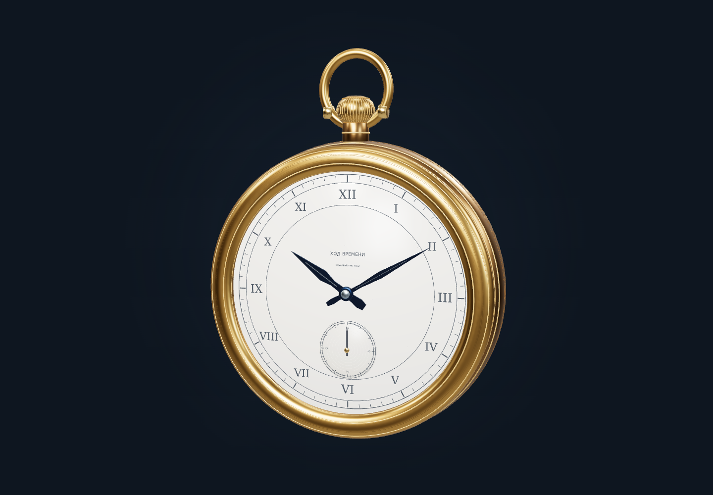
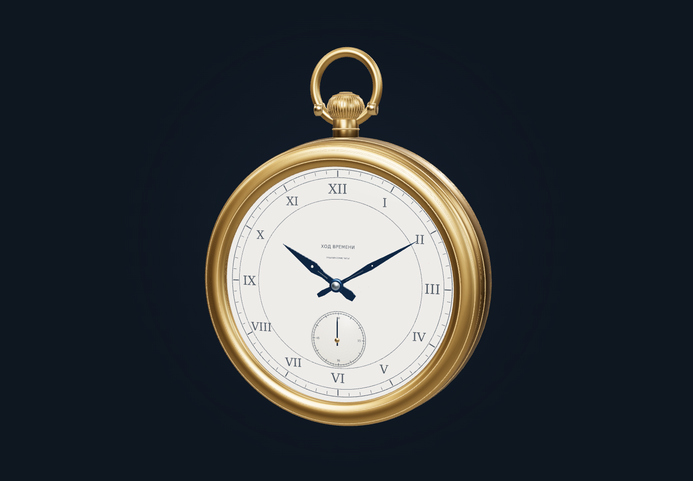
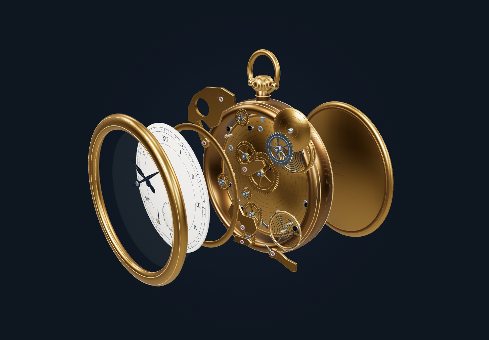
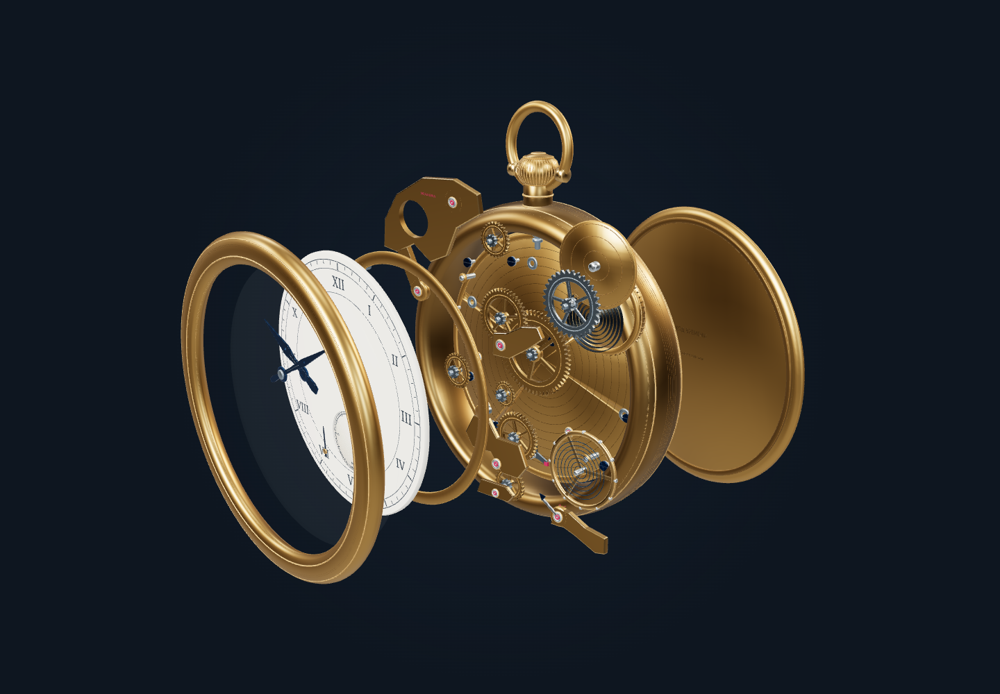

Ход времени. До и после
Обе модели сняты в Three.js с одинаковым освещением, viewport 1440×1000 и одним сценарием. Для сравнения геометрии интерфейс скрыт; кадрирование рассчитывается по границам каждой модели, поэтому масштаб может немного отличаться. Изображения открываются в полном размере.
Циферблат и корпус

До. 120 704 треугольника. Исходные стрелки и накладной секундный диск.

После. Плавнее профиль ободка, крупнее цифры, видны сквозные прорези стрелок и настоящее углубление малых секунд.
Механизм при раскрытии

До. Круглая проволока пружины и простые кромки зубьев.

После. Фаски колёс, втулки осей, расточенные рубины и ленточная пружина.
Все слои
До. 47 независимых групп.
После. Сохранены те же 47 групп. Добавлена геометрическая детализация внутри узлов.
Chrome headless, WebGL 2 / ANGLE SwiftShader. Это настоящий браузерный рендер моделей, не измерение аппаратного GPU. Исходная композиция сайта сохранена отдельно: первый экран до редизайна. Финальные четыре viewport со всеми стадиями находятся в папке scroll. Снимки служат отчётом; сайт использует интерактивный GLB.